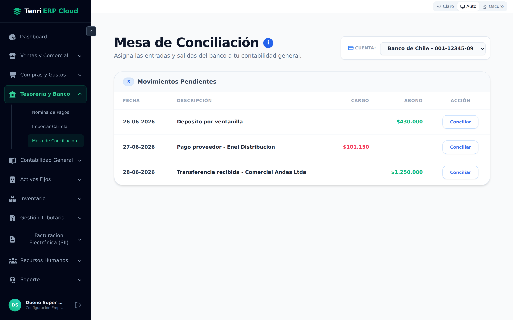
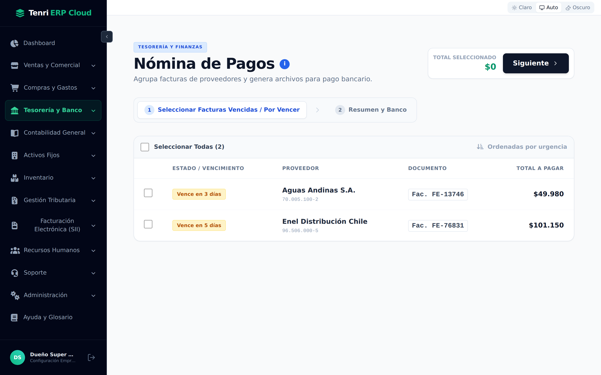
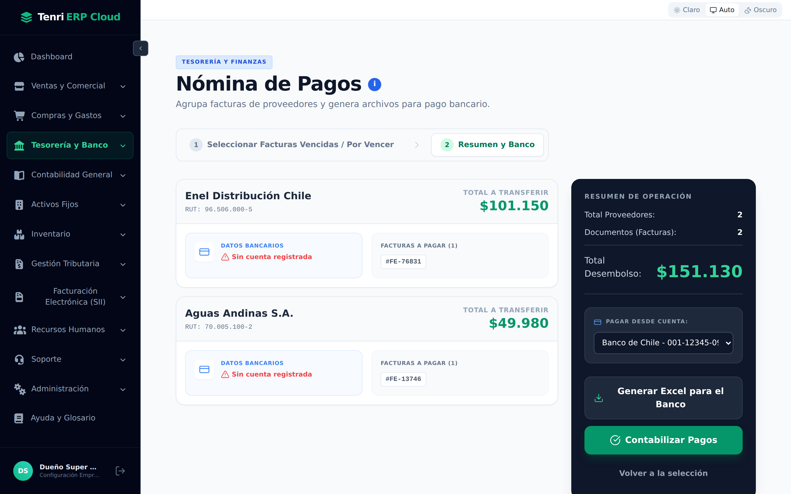
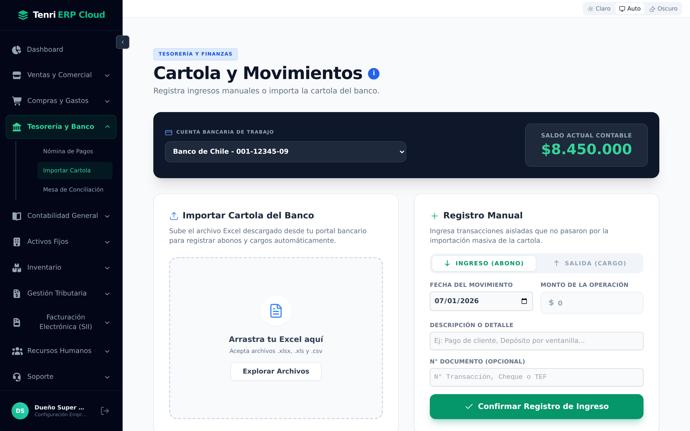
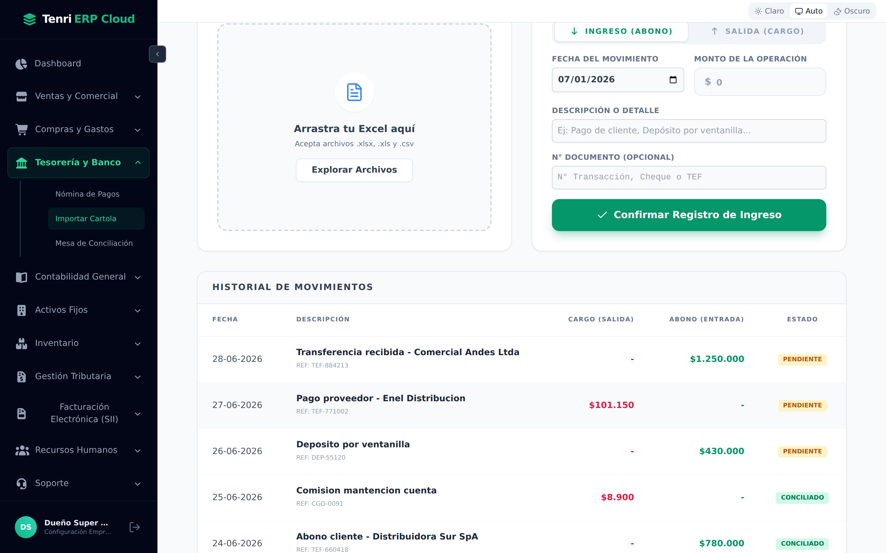
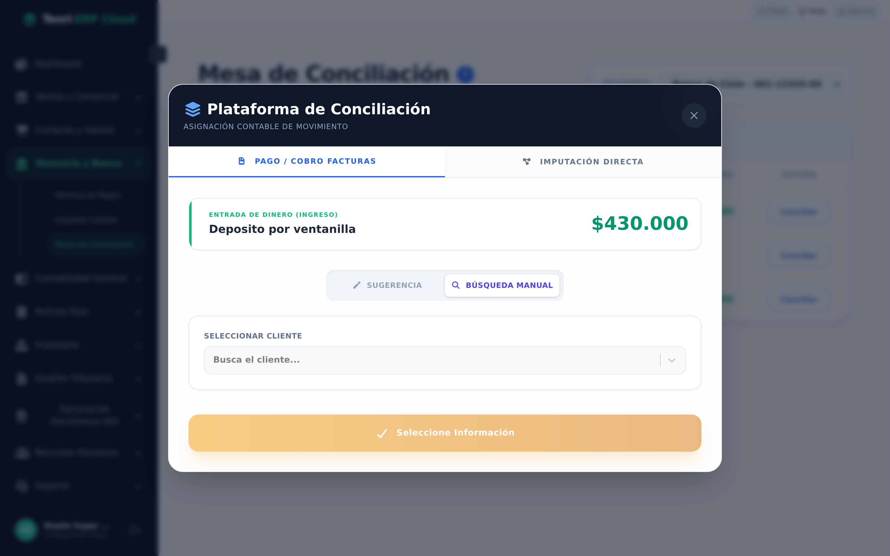

Programe los pagos a proveedores, mantenga la cartola de sus cuentas al día y concilie cada movimiento del banco con su contabilidad, todo desde un mismo lugar.

El puente entre su dinero real en el banco y su contabilidad.
Al abrir Tesorería y Banco en la barra lateral, se despliegan tres pantallas que se usan en este orden natural de trabajo:
Elija qué facturas de proveedores va a pagar en esta tanda.
La pantalla trabaja en dos pasos, señalados arriba (1 Seleccionar → 2 Resumen y Banco). En el primer paso, el sistema le muestra únicamente las facturas registradas que están por vencer o ya vencidas, ordenadas por urgencia (las más críticas primero).
Cada fila indica:
| Columna | Qué muestra |
|---|---|
| Estado / Vencimiento | Una etiqueta de color: Vencida hace N días (rojo), Vence en N días (ámbar si es urgente, gris si hay holgura). |
| Proveedor | Razón social y RUT del acreedor. |
| Documento | El número de la factura de compra. |
| Total a Pagar | El monto bruto del documento. |
Marque la casilla de cada factura que quiera pagar (o use Seleccionar Todas). El recuadro Total Seleccionado, arriba a la derecha, va sumando en vivo. Cuando termine, presione Siguiente.

Confirme los datos, elija la cuenta de origen y decida cómo pagar.
En el segundo paso, el sistema agrupa las facturas por proveedor: aunque haya seleccionado varias facturas de un mismo acreedor, se consolidan en un solo pago con su Total a Transferir. De cada proveedor verá:
A la derecha, el panel Resumen de Operación muestra el total de proveedores, la cantidad de documentos y el Total Desembolso. Antes de continuar, elija en Pagar Desde Cuenta la cuenta bancaria de su empresa desde la que saldrá el dinero.

Desde aquí tiene dos caminos, según cómo opere su empresa:
| Acción | Qué hace |
|---|---|
| Generar Excel para el Banco | Descarga una planilla con RUT, nombre, banco, cuenta, monto y glosa de cada beneficiario, lista para cargarla en el portal de su banco como pago masivo / nómina. |
| Contabilizar Pagos | Registra la salida de dinero en el sistema: marca las facturas como PAGADAS, rebaja el saldo de la cuenta y genera el asiento contable del egreso, todo en una sola operación. |
Cargue lo que pasa en su cuenta bancaria: automático o a mano.
En la parte superior, elija la Cuenta Bancaria de Trabajo. A la derecha verá su Saldo Actual Contable. Debajo, dos formas de registrar movimientos:
| Método | Cuándo usarlo |
|---|---|
| Importar Cartola | Descargue la cartola desde el portal de su banco (.xlsx .xls .csv), arrástrela al recuadro y presione Procesar. El sistema registra abonos y cargos en bloque. |
| Registro Manual | Para transacciones sueltas que no vienen en la cartola. Elija Ingreso (Abono) o Salida (Cargo) y complete el formulario. |
El Registro Manual pide estos campos:
| Campo | Descripción |
|---|---|
| Fecha del Movimiento | El día en que ocurrió la transacción. |
| Monto de la Operación | El valor del abono o del cargo. |
| Descripción o Detalle | Glosa que identifica el movimiento (ej.: “Pago de cliente”, “Transferencia proveedor”). |
| N° Documento | Opcional: número de transacción, cheque o TEF. |

Más abajo en la misma pantalla, el Historial de Movimientos lista todo lo cargado en la cuenta, con columnas de Cargo (salida), Abono (entrada) y un Estado que es la clave del módulo:
| Estado | Significado |
|---|---|
| PENDIENTE | El movimiento existe en el banco pero aún no fue asignado a una factura o cuenta contable. Es lo que queda por conciliar. |
| CONCILIADO | El movimiento ya fue imputado en la contabilidad. Está cuadrado. |

Asigne cada movimiento pendiente del banco a su contabilidad.
La Mesa de Conciliación reúne todos los movimientos PENDIENTE de la cuenta seleccionada. El contador junto al título indica cuántos quedan por resolver. Presione Conciliar en la fila que quiera trabajar.
Se abre la Plataforma de Conciliación, que muestra arriba el movimiento a asignar (entrada o salida y su monto) y le ofrece dos formas de imputarlo:
| Pestaña | Para qué sirve |
|---|---|
| Pago / Cobro Facturas | Vincula el movimiento a una factura. Un cargo salda una factura de compra; un abono, una factura de venta. |
| Imputación Directa | Lleva el movimiento directo a una cuenta contable cuando no corresponde a una factura (comisiones, intereses, gastos bancarios). |
Dentro de Pago / Cobro Facturas tiene dos modos de encontrar el documento:

Según los montos, el botón de confirmación se adapta solo: Aprobar Pago Exacto cuando calza al peso, Aprobar Pago Parcial si la factura es mayor, o Aprobar Pago + Anticipo si el movimiento supera lo adeudado.
A medida que concilia, los movimientos pasan de Pendiente a Conciliado y desaparecen de la bandeja. Cuando no queda ninguno, la Mesa muestra “¡Banco 100% Cuadrado!”: su contabilidad refleja exactamente lo que informa el banco.
Tesorería y Banco cierra el círculo del dinero: programa los pagos, registra lo que ocurre en la cuenta y lo concilia con la contabilidad.
Agrupa facturas por vencer, genera el Excel del banco o contabiliza el egreso.
Importa el Excel del banco o registra movimientos a mano y sigue el saldo.
Asigna cada abono y cargo a su factura o cuenta hasta cuadrar el banco.